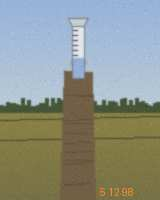

|
Daily Rainfall from Out Near Cullison, Kansas |
Hello and welcome to my page. My name is Wendell and I have been reading the rain gauge out on the fence post every morning since April of 1971. I write it down in a notebook that I keep in the kitchen drawer. My wife June says I am the only man in Pratt County who gets excited about a tenth of an inch. Well maybe so. When you have wheat in the ground a tenth of an inch is nothing to sneeze at.
This spring my granddaughter Kayla helped me get on the Internet and
showed me how to make a home page, so I thought I would put my rain numbers
on here for anybody that is interested. I am still learning how to do this
so please be patient.
 My gauge on the east fence. It is the 11 inch kind from the farm store, not fancy. |
all numbers in inches |
Latest
July 27 - .35 overnight with some wind, not much. Corn across the road
is rolling up in the afternoons. We could sure use a good soaker.
July 19 - 1.10 in about forty minutes. Most of it ran off.
July 6 - .70
June 22 thru 24 - 2.85 total, a real good rain, Kayla and I sat on
the porch and watched it come.
The Big Ones I Remember
Weather Links
National Weather Service Dodge
City
The Weather Channel
Kansas Ag Statistics (crop
reports)
Kayla's
Page (my granddaughter, she has horses)
I am going to put up the whole notebook a year at a time
when I get it typed in.
You are visitor number
since May 30, 1998
Please write me and tell me how much rain you got!
wpruitt@southwind.net
Last updated July 28, 1998